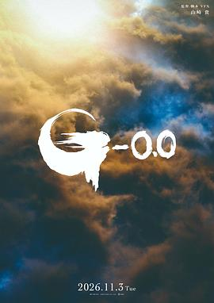
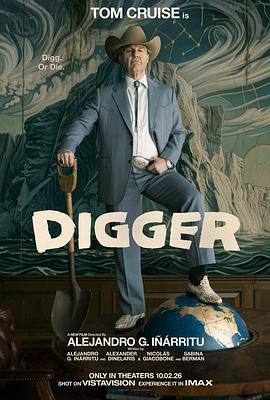

惊悚悬疑片《孤楼夜幽灵》于9月9日全国上映。影片以「失忆+别墅怪事+女儿失踪」为核，二十年后女主记忆逐渐复苏，重返旧地寻找当年离奇失踪的女儿，是典型的国产中小成本惊悚类型片。
惊悚悬疑：一场意外令林欣失去记忆，别墅怪事频发、女儿离奇失踪；二十年后记忆逐渐复苏，她重返旧地寻找女儿……（搜狐新片预览）
浙产刑侦悬疑剧《深渊无间》于9月9日18:00登陆爱奇艺迷雾剧场，由刘海波执导、任嘉伦（任国超）与秦俊杰领衔主演，改编自一线民警作家深蓝小说《深渊》。剧集以「网文复刻悬案卷宗」的高概念设定展开双线叙事，特邀专业警务人员全程指导还原真实刑侦生态，被视作年度硬核悬疑黑马。
刑侦悬疑：312连环悬案证人灭口、真凶逍遥，多年后一部犯罪小说《深渊》悄然上线，再现当年绝密卷宗细节；新人刑警李成（任嘉伦 饰）深入调查，揭开尘封真相（深蓝原著《深渊》）。
都市情感剧《早春晴朗》（井柏然、孙千主演）于9月9日点映收官，全24集。剧集此前以75.68登顶骨朵全网剧集热度榜，是9月剧集市场中热度较高的都市情感向作品。
都市情感：围绕都市青年的事业与情感拉扯展开（网易追剧日历）。
9 月 9 日，光线影业出品、罗冬执导的电影《活色生香》正式官宣定档 10 月 1 日全国上映，同步发布定档海报与「给你点颜色看看」角色海报、一次性曝光全阵容。影片被片方定位为国内首部聚焦老年婚恋的喜剧电影，以银发群体的退休生活为切口，讲述薛宝梅（闫妮 饰）、蒋芳芳（叶童 饰）、梁美心（倪虹洁 饰）三位女性不被年龄束缚、追寻自我与情感的鲜活人生，海报标语「恋爱还得看老辈子」。凭短剧《好一个乖乖女》走红的柯淳在片中饰演 90 年代初入行的年轻房产中介「潘帅」，为其大银幕首秀。
影片讲述三位退休女性在子女离巢、生活重启之际，主动挣脱社会对「老年＝沉寂」的刻板标签，直面孤独、试探心动、重拾尊严——不靠牺牲自我成全他人，而以清醒与幽默拥抱爱与可能（据新京报及片方定档物料口径）。
据泉州网（泉州晚报社）9 月 9 日报道，由福建省文化和旅游厅、福建省广播电视局、福建省文化和旅游促进会指导的体育励志微短剧《闽超老男孩：热血下半场》在泉州正式杀青，全面转入后期制作阶段，当日杀青新闻登上泉州热点榜第一。全剧全程在泉州实景拍摄，涵盖足球赛场、城市地标与生活场景，是「微短剧＋体育＋文旅」融合的在地样本。
剧集讲述前职业球员洪文杰因伤退役后，与两位中年老友重组球队，克服身体、生活与内心重重障碍，最终重返赛场；聚焦伤病、离异、职场压抑与经济拮据等中年现实困境，核心诠释「热爱不死，中年亦少年」的理念（据泉州网报道口径）。
星岛头条 9 月 9 日报道，港产片冰河期下 2027 贺岁档已率先启动、至少三部港产贺岁片在列：其一为香港与马来西亚合拍的《黄金囍事》，由麦浩邦执导、《叶问》系列编剧黄子桓任监制兼剧本创作，已于 9 月 8 日在马来西亚举行首场电影发布会；其二为英皇电影《新富貴吉祥》（暂名），蔡卓妍（阿 Sa）9 月 8 日于社交平台公开开镜照，导演罗耀辉、监制陈茂贤，男主角为林峯，题材围绕「食」展开；其三为有传由黄宗泽主演兼监制的邵氏贺岁片，官方未公布片名与完整阵容。

9 月 9 日，东宝发布哥斯拉系列新作、《哥斯拉-1.0》续集《哥斯拉-0.0》（Godzilla Minus Zero）正式预告，并确认档期：2026 年 11 月 3 日「哥斯拉之日」在日本上映，11 月 6 日登陆北美院线（含 IMAX）。本片由山崎贵回归担任导演、编剧与视效总监，神木隆之介、滨边美波回归主演，长泽雅美新加盟饰演天才气象预报官。官方确认本片为日本电影史上首部采用 Filmed for IMAX 规格拍摄的作品，预告后段切入 1.43:1 IMAX 全画幅。故事承接前作两年后，哥斯拉跨洋踏入纽约街头；预告中出现疑似王者基多拉的线索，但东宝未正式确认。
官方故事设定在战争使日本沦为「零（Zero）」、又被哥斯拉推入「负数（Minus）」的两年之后：正当人们挣扎着完成复兴、终于重获日常之时，全新的绝望再次降临，将仅存的希望彻底粉碎（据东宝预告与新浪科技、IT 之家转述的官方口径）。

汤姆·克鲁斯 9 月 8 日于社交平台预告「最终预告明日见」，华纳兄弟于 9 月 9 日释出《挖掘者》（Digger）最终预告，并同步发布新海报。影片由墨西哥三杰之一亚历杭德罗·冈萨雷斯·伊尼亚里图执导并参与编剧，是克鲁斯罕见的黑色喜剧／灾难片转向：他饰演石油大亨迪格·洛克威尔，自认是人类唯一的救世主，却在生态危机中一步步走向失控。全片以 VistaVision 拍摄，华纳兄弟定档 2026 年 10 月 2 日北美及 IMAX 公映。
官方故事：影片讲述世界上最有权的男人（汤姆·克鲁斯 饰）极力证明自己其实是人类的救世主，结果等来的是他亲手酝酿、足以摧毁万物的灾难。伊尼亚里图称「灾难不是彗星、地震或外星入侵，灾难就是我们自己」，影片围绕贪婪、权力与责任三种「古老力量」展开（据片方物料与 Cinema Express、FilmiBeat 转述）。
泰勒·派瑞自编自导自演的系列第三部《Why Did I Get Married Again?》（中文媒体译作《我为什么又结婚了？》）于 2026 年 9 月 9 日在 Netflix 全球上线。影片把熟悉的「婚姻度假」场景换成意大利科莫湖的目的地婚礼：安吉拉（塔莎·史密斯 饰）与马库斯（迈克尔·加·怀特 饰）的女儿贾思敏将与运动员韦斯利完婚，而韦斯利的母亲正是首次登场的成功女商人罗丝琳——由奥斯卡提名演员塔拉吉·P·汉森出演。该片是泰勒·派瑞与 Netflix 创意合作的最新成果，官方片长 1 小时 49 分，评级 PG-13。
四对夫妇因这场意大利婚礼重聚，随着过去与现在的感情问题浮出水面，他们开始反思多年来婚姻的变化，并重新面对系列的核心提问：「我为什么又结婚了？」片中一句台词点题——「你们的婚姻看起来那么完美」，得到的回答是「我们没告诉过你们它其实有多不完美」（据 Netflix Tudum 官方稿件）。
《华夏时报》9月9日刊文指出，在《给阿嬷的情书》《牛来》的激励下，诸多中小成本电影选择9月这个相对平淡的月份上映，如《歌声缘何慢半拍》《目不转睛》《浪花儿》等，多部小成本惊悚片也登上大银幕。但中国电影评论学会产业专委会副主任朱玉卿认为，两部影片均属不可复制的个案，其成功由多重因素共同促成；业内对小成本电影的投资信心很难依靠单一案例建立。文章同时指出，今年惊悚片因成本极低、无需知名演员，成为较具盈利安全性的选择。
据电影票房统计，9月8日（周二）全国共排映33.6万场，产出票房2950万，环比再跌5.3%，全天仍无任何作品突破千万，工作日大盘小幅领先去年同期「开学档」。截至当日，9月市场累计产出票房4.84亿，年度累计票房已达286.9亿。《欢迎来龙餐馆》单日865万居首（累计20.96亿），《空枪》722万（累计5.28亿）、《奥德赛》386万（累计6.7亿）分列二、三。
9 月 9 日，随着《活色生香》定档国庆，凭短剧《好一个乖乖女》爆红的柯淳将在这部光线影业影片中完成大银幕首秀，饰演 90 年代初入行的年轻房产中介「潘帅」。这条选角被行业解读为「竖屏流量」向院线的一次收编：资本看中的是短剧演员背后庞大的竖屏观众基本盘，而从竖屏短剧到长剧再到院线电影，表演方式也面临从「快节奏强冲突」到「放大微表情」的完全不同的要求。